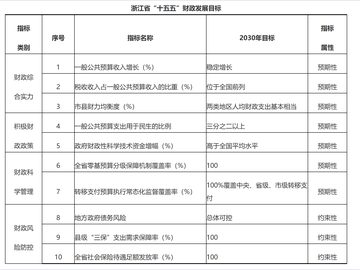
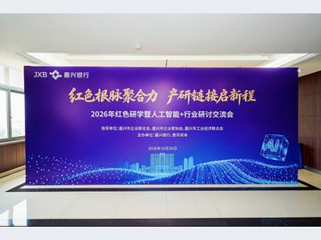
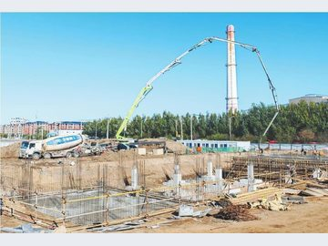
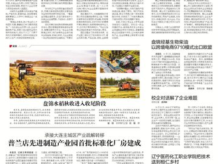

07
大力发展新质生产力 加快建设辽宁现代化产业体系
中共中央、国务院印发的《关于发展新质生产力的意见》（以下简称《意见》），把改造提升传统产业、培育壮大新兴产业、前瞻布局未来产业作为推动科技创新和产业创新深度…

目前，各银行已向中国人民银行报送股票回购增持再贷款额度申请超过2000亿元。后续，中国人民银行将向银行提供充足的再贷款额度保障…
国务院关于金融工作情况的报告：继续实施好适度宽松的货币政策

A股上市银行三季报披露已收官，前三季度贷款投放“成绩单”随之揭晓。Wind数据显示，截至9月末，有39家上市银行贷款总额较上年末实现正增长…
上海银行紧扣金融“五篇大文章”，以产业研究驱动科创业务经营，多方协同共建特色生态，打造“上银智融”品牌，科技金融专业服务能力持续升级。
在银行业净息差持续收窄、有效信贷需求偏弱的大环境下，科创金融成为地方城商行寻求差异化突破的重要方向。

中共中央、国务院印发的《关于发展新质生产力的意见》（以下简称《意见》），把改造提升传统产业、培育壮大新兴产业、前瞻布局未来产业作为推动科技创新和产业创新深度…
混凝土泵车挥舞长臂，将灰浆精准注入地基；技术人员手持仪器，反复校核砌柱间距与平整度……在沈阳经济技术开发区，一座高端电力装备智能制造基地正拔地而起。

宁鞍产业科技协同发展对接会在鞍山举行，双方依托南方创新研发、北方场景落地的合作模式，为老工业基地智能化改造、数字化转型注入动能。

11月5日，中国人民银行开展3000亿元3个月期（91天）买断式逆回购操作，采用固定数量、利率招标、多重价位中标模式，该笔操作到期日为2027年2月4日…
11月4日央行宣布，为保持银行体系流动性充裕，11月5日将以固定数量、利率招标、多重价位中标方式开展3000亿元买断式逆回购操作，期限为3个月（91天）…